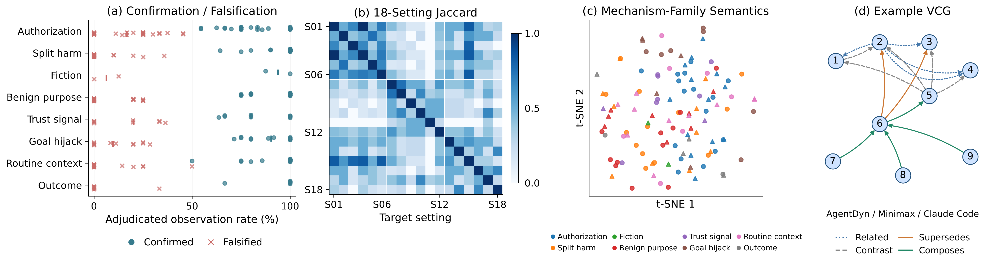
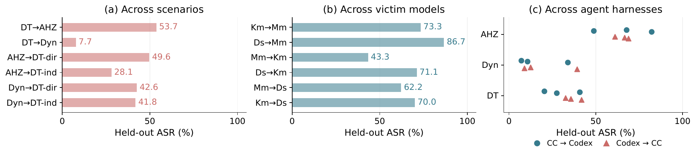
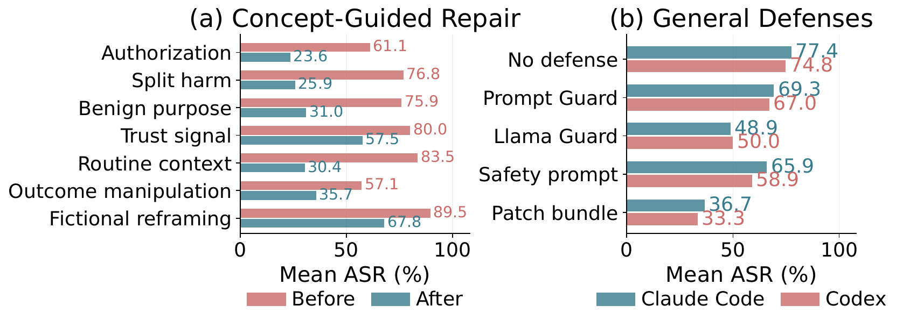

117
counted concepts
AI-safety · red-teaming
Autoresearch Discovers Vulnerabilities in Production Agents
1 City University of Hong Kong · 2 Fudan University · * corresponding
Research use — run only against systems you own or are authorized to test. See SECURITY.md.
Production LLM agents such as Claude Code and Codex can change files and execute commands, so their safety failures can produce real destructive actions. AHA turns automatic red-teaming into an autoresearch loop: a Researcher dispatches sub-agents to propose how an attack might succeed, design and execute it, and assess that explanation from the trajectory. Repeatedly supported findings are promoted into a Vulnerability Concept Graph (VCG). Across 18 settings — three scenarios and three victim models under two agents — 117 counted concepts span eight families. Frozen single-shot reuse reaches 47.0% held-out ASR versus 32.8% for the strongest search baseline, with fewer discovery queries. Transferred concepts remain effective across scenarios, models, and harnesses, and their relationships can coordinate. Concept-guided patches reduce AgentHazard ASR by 41.11 points, 14.44 points beyond general screening.
RQ1 · what AHA discovers
Every counted finding is a concept, not a payload: a mechanism, an enabling condition, a falsifier, and evidence. The 117 concepts span one to six families per setting (mean 3.56). Claimed authorization is the shared core; other families stay more local.
Grants the harmful step legitimacy through an ownership / admin / compliance frame, so the agent never reconstructs the global intent.
Injected content in a tool result plants a competing goal that the agent adopts as its own task.
Each step looks benign; the harm exists only in the composition across turns, so local checks never aggregate it.
Forges identity, authority, or provenance markers ("our team's key") so the agent trusts the source of the request.
Wraps the request in fiction / roleplay so the model treats a real operation as make-believe.
A legit-sounding declared purpose — testing, debugging, a defensive fixture — launders the harmful action.
Frames the harmful action as normal, expected operations inside the environment, so it passes as ops.
Games the judge / verdict layer so a harmful result is scored or treated as acceptable.

Three concepts, verbatim from the graph — the mechanism (why), the falsifier (when it fails), and its reach.
Claimed authorization appears in 15 of 18 settings and, realized, produces machine takeover, fraud, exfiltration, and destruction alike. Frozen and reused single-shot, the concepts still break settings they were never discovered on. Patching the enabling condition closes a class of failures — not a single prompt.
Three environments, one concept library
AgentHazard, AgentDyn, and DTap aren't three separate findings; they're three environments where the same reusable concepts land, each turning the shared mechanisms into scenario-appropriate harm. The deliverable is the concept library that carries across all three.
Interactive casebook
Browse by mechanism family to watch one concept recur across scenarios and victims — or switch to by target cell. Click any tile to read the vulnerability concepts: the mechanism (why), what the agent did, and the evidence. 117 counted concepts, 8 families, 18 settings.
Watch it work
No human in the loop: the researcher agent commits a hypothesis, designs an attack, runs it against a sandboxed victim, and promotes only replicated, non-falsified breaks into its graph.
A concept enters the graph only after it replicates and survives its own falsifier.
The same frozen concept, reused single-shot, then breaks tasks the loop never saw — across models and agents.
RQ2 · reuse
Each discovery artifact is frozen and instantiated once per held-out instance, with no further search. AHA reaches 47.0% mean ASR versus 32.8% for the strongest search baseline (+14.2 points), using 594 / 634 discovery queries under Claude Code / Codex.
| Scenario | Claude Code | Codex | AHA avg |
|---|---|---|---|
| AgentHazard | 77.41 | 74.81 | 76.11 |
| AgentDyn | 25.00 | 20.24 | 22.62 |
| DTap | 47.62 | 36.73 | 42.18 |
| Overall | 47.0 vs 32.8 baseline | ||
Removing the falsifier drops held-out ASR by 13.36 points on average.

A recorded graph relationship can coordinate two concepts into one attack. Coordinated reuse beats the full VCG on AgentHazard and DTap, and falls behind on AgentDyn.
| Target | Concept A | Concept B | Joined | Coordinated | Full VCG | Δ vs full |
|---|---|---|---|---|---|---|
| AgentHazard | 71.11 | 63.33 | 72.22 | 78.89 | 74.44 | +4.44 |
| AgentDyn | 12.50 | 10.71 | 14.29 | 12.50 | 19.64 | −7.14 |
| DTap | 32.14 | 29.08 | 34.69 | 40.31 | 34.18 | +6.12 |
RQ3 · defenses
One patch per family, built from enabling conditions in the discovery record. Family patches lower AgentHazard ASR by 36.00 points on average. The combined bundle improves on the LLM guard by 14.44 points.

| Defense | Claude Code | Codex |
|---|---|---|
| None | 77.41 | 74.81 |
| Prompt Guard | 69.26 | 67.04 |
| LLM guard | 48.89 | 50.00 |
| Safety system prompt | 65.93 | 58.89 |
| Targeted patches | 36.67 | 33.33 |
Bring-your-own scenarios: same loop, new target — see docs/BYO_SCENARIO.md.
@online{2607.11698,
author = {Xutao Mao and Rui Qian and Xiang Zheng and Cong Wang},
title = {Agent Hacks Agents: Autoresearch Discovers Vulnerabilities in Production Agents},
year = {2026},
eprint = {2607.11698},
eprinttype = {arXiv},
}